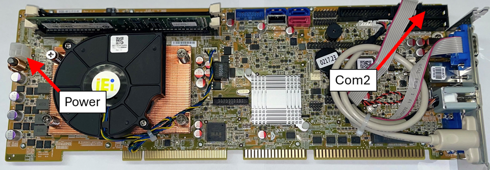
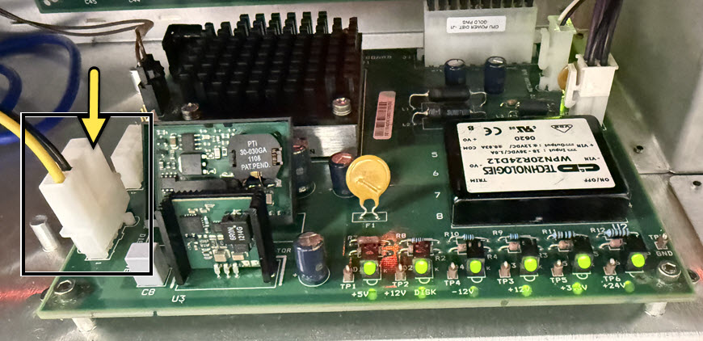
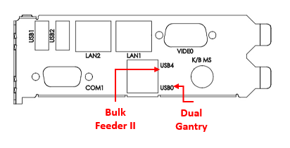
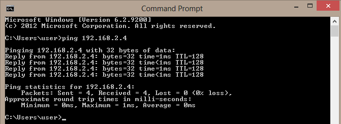
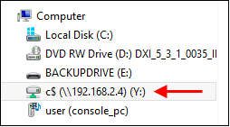

Important: If the console PC does not have a USB BACKDRIVE connected you must first connect a USB flash drive to the console PC and save a backup copy of the database to the flash drive. See
Database - Restoring Console PC from Backup for more information.
Note: Give to the customer any documentation (e.g. stuffers) that shipped with the PCB.
Figure 131: Windows 10 CPU PCB with power cable
Prepare the instrument
Record the system
run hours and
test count. These can be found in the details of the most recent event in the Event Log.
Go to
Configure > PC Admin > System Admin > Shutdown Instrument to close the application.
Type the password
Access2Support and select
OK.
At the notification
You must now turn off the instrument, using the instrument power switch, select
OK.
After the applications have closed use the power switch to turn off the instrument.
Open the upper left front cover of the instrument.
Disconnect the COM2 serial ribbon cable from the CPU PCB.
Disconnect the following cables from the right end of the CPU PCB.
Video
Keyboard
Mouse
Serial
Network (LAN1 and
LAN2)
Note: Before you disconnect the Ethernet cables from the LAN1 and LAN2 connectors, be sure to label each cable.
USB
Remove the CPU PCB from the card cage (one screw).
Install the CPU PCB
Install the new CPU PCB into the card cage (one screw).
Figure 133: Windows 10 CPU PCB Connector Detail

Connect the COM2 ribbon cable to the CPU PCB.
Connect the CPU 12V power cable from J7 on the power distribution PCB to the power connector on the left side of the CPU PCB.
Figure 134: CPU PCB Power Cable Connected to the Power Distribution PCB

Note: Be sure the CPU 12V power cable is connected to the power distribution board with the cables on the connector toward the front side of the instrument as shown in the image above.
Connect the following cables to the right end of the CPU PCB.
Video
Keyboard
Mouse
COM1 Serial cable
Network (LAN1 and
LAN2)
USB to
USB0 connector (integrated instruments only)
USB to
USB4 connector (Bulk Feeder II instruments only)
Figure 135: Windows 10 PCB Connectors

Note:
The cable with the ferrite bead from the AU network hub connects to
LAN1 in the Windows 10 CPU PCB.
A keyboard/mouse cable is provided with the CPU PCB. If the cable is missing, connect the keyboard cable to the CPU keyboard/mouse connector. If necessary, you may connect the mouse from the console PC to a USB connector on the CPU.
Verify communication between the console PC and the instrument
Press the
Windows key and select
Command Prompt or type
command prompt to open the Command Prompt window.
In the Command Prompt window type
ping 192.168.2.4 and press
Enter.
Verify the console PC received a reply from the AU.
Figure 136: Verifying the Console PC Receives a Reply from the AU

Note: If the error
Destination Host Unreachable is displayed
You might have typed the IP address incorrectly. Confirm you typed the IP address correctly.
The Windows 10 console PC might not be connected to a working network. In that case, the error
Destination Host Unreachable will be displayed if you ping any IP address, including the address of the console PC.
The AU and console PC might have been assigned the same IP address, which means there will be a network conflict and no communication can occur. To resolve the conflict, change the console PC IP address to 192.168.2.1, reboot the instrument and console PC, and ping addresses 192.168.2.1 through 192.168.2.10 again.
Note: When you restart a Privacy & Security-compliant Windows 10 console PC, you must type the password
Access2Admin in the dialog to open Windows.
Figure 137: Security Dialog
The Ethernet cable might not be connected to the console PC. The network connector on the console PC is located between the USB 3.0 connector and the Video connector. See
Console PC Connector Identification for more information.
The Ethernet cable might be connected to the instrument incorrectly. The DxI instrument has two network connectors identified as
PC and
UCTA. If unsure which connector to use, try both, or connect to the spare connector on the underside of the sample processing unit (SPU), or connect directly to the AU hub.
Enable Remote Desktop from the Console PC to the AU
Press the
Windows key and type
remote to open Remote Desktop Connection.
Remote Desktop Connection connects the console PC to the instrument CPU so that you can control the instrument and its applications from the console PC. When connected, the Remote Desktop window will display the Windows 10 Desktop of the instrument CPU.
In the
Computer box type
192.168.2.4 and select
Connect.
If prompted, type
user for the username and
tech for the password.
At the RDS warning dialog, if prompted, select the
Don't ask me again for connections to this computer checkbox and select
Yes.
Copy the instrument alignments file from the console PC to the AU CPU
Replacing the CPU PCB on the AU resets information about supply, run hours, and test counts.
Verify the USB BACKDRIVE (or USB flash drive) is connected to the console PC.
Map the AU network drive to the console PC.
Press the
Windows key and select
File Explorer.
Right-click
Computer and select
Map Network Drive.
In the Folder window type
\\192.168.2.4\c$
If it is available, select
Reconnect at Sign In. Select
Finish.
Go to the Backup folder in
BACKDRIVE (E:) (or the USB flash drive).
Right-click
xxxxxx_specific.ini and select
Copy. (xxxxxx is the serial number of the instrument.)
Go to the mapped AU drive
Figure 138: Mapped AU Drive

Right-click the
AU folder and select
Paste.
Note: If there is no
AU folder, right-click the mapped AU drive (C$ (\\192.168.2.4), select
New and select
Folder. Right-click
New folder, select
Rename, and type
AU.
Paste xxxxxx_specific.ini into the
AU folder.
In the
AU folder, right-click
xxxxxx_specific.ini, select
Rename, and type
specific.ini.
Install the DxI instrument system software onto the new AU CPU hard drive
Insert the software CD into the external CDROM drive on the console PC and click
Install to install the applications.
Note: The software installation application should open automatically, but it may take up to three minutes for the application to open. If the application doesn’t open automatically, in File Explorer select
Computer and double-click the
D: DVD drive.
Select
Finish to restart the console PC and the AU CPU.
Note: When you restart a Privacy & Security-compliant Windows 10 console PC, you must type the password
Access2Admin in the dialog to open Windows.
Figure 139: Security Dialog
Note: If UI initialization fails and a
Failed to Synchronize Clocks notification is displayed, verify the
Time Zone setting on the console PC matches the setting (GMT/UTC) on the AU. Refer to
Verifying the Date and Time Settings from Windows Desktop.
Remove the software CD from the external CDROM drive.
Open the service application and go to
Diagnostics > Prime Fluidics. Prime the sample pump the default number of cycles.
Attach the upper left card cage cover.
Remove any cover interlock switch bypass devices and close the instrument covers.
Restart the instrument to launch the Machine Control application.
Note: To avoid application errors or other issues after the loss of MCC power you must restart the AU or restart the Machine Control application on the AU.
Go to
Diagnostics > Initialize. Select
Clean Out All Positions and
Remap and select
OK.